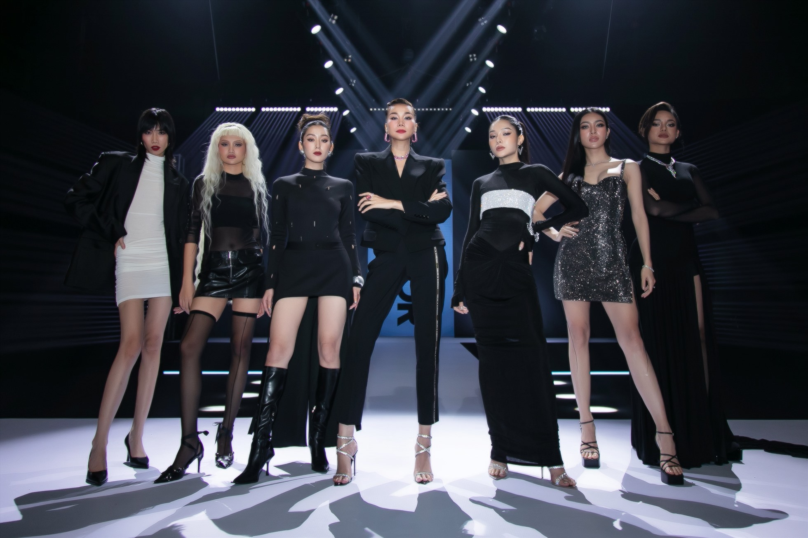

"

TEAM
MENTOR THANH HẰNG
Giữa cơn bão The New Mentor, Thanh Hằng bất ngờ tung ra bộ ảnh cùng các thí sinh đầu tiên, sẵn sàng chiến đấu hết mình trong chặng đường sắp tới.
Khung cảnh được dàn dựng như trong cuộc thi thể lực với điểm nhấn là bộ môn chạy marathon, Thanh Hằng đứng ngoài hướng dẫn giúp các thành viên chạy về đích.
Trang phục trong gam màu trung tính, không cần quá nổi bật nhưng vừa hay lại tôn lên ý nghĩa của cả concept và hình thể người mẫu.
Bộ ảnh có sự góp mặt của GĐST Alex Fox, NAG Milor Trần và stylist Hoàng Ku.